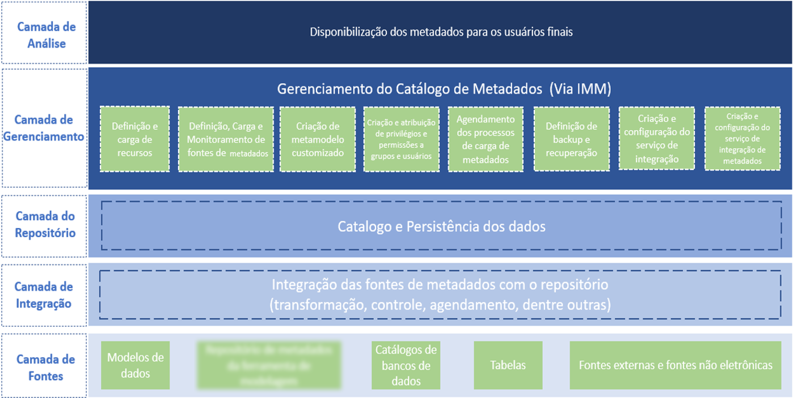
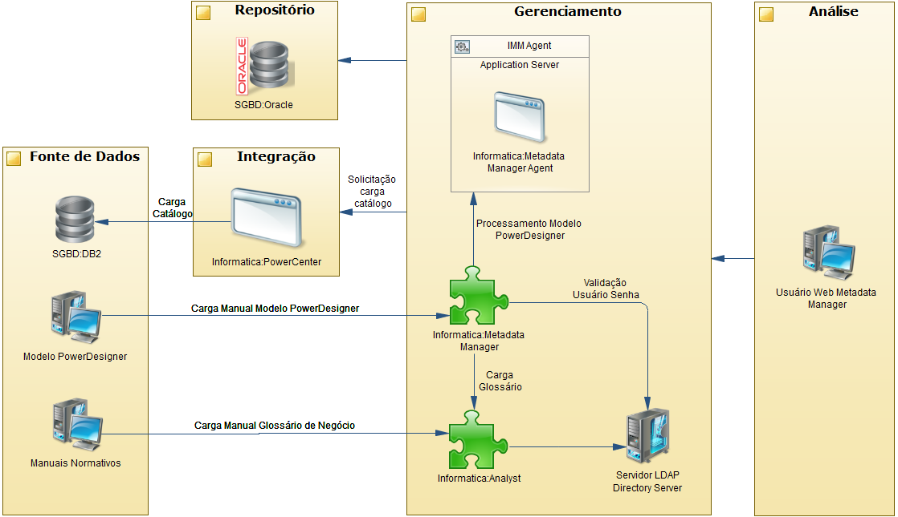

METADADOS
Importante: Essa arquitetura de referência se encontra em fase de validação e não possui nenhum indicativo de uso geral pelas equipes. Havendo entendimento que ela se encaixa nas necessidades de seu sistema, a SUART deve ser acionada.
O QUE É METADADOS
Metadados são informações estruturadas que descrevem, explicam, localizam ou ainda facilitam a descoberta, utilização ou gestão de um dado e contém tanto definições técnicas (informações necessárias para as diversas ferramentas que precisem armazenar, manipular e movimentar dados) quanto negociais (informações necessárias para entender o contexto de negócio e o significado dos dados).
TIPOS DE METADADOS
NEGÓCIO
Incluem nomes e definições não técnicos de conceitos, áreas de assunto, entidades e atributos; tipos de dados de atributo e outras propriedades de atributo; descrições de faixa; cálculos; algoritmos e regras de negócios; valores de domínio válidos e suas definições.
Exemplos de metadados de negócio:
- Modelos de dados, definições e descrições de conjuntos de dados, tabelas e colunas.
- Regras de negócios, regras de qualidade de dados e regras de transformação, cálculos e derivações.
- Origem e linhagem dos dados.
- Padrões e restrições de dados.
- Nível de segurança / privacidade dos dados.
- Problemas conhecidos com dados.
- Notas de uso de dados.
TÉCNICO
Fornecem informações sobre os detalhes técnicos dos dados, os sistemas que armazenam dados e os processos que os movem dentro e entre sistemas.
Exemplos de metadados técnicos:
- Nomes e propriedades da tabela e da coluna do banco de dados físico.
- Direitos de acesso a dados, grupos, funções.
- Regras de CRUD de dados (Criar, Substituir, Atualizar e Excluir).
- Detalhes do trabalho ETL de dados (Extração, Transformação e Carregamento).
- Documentação da linhagem de dados, incluindo informações de impacto de alterações a montante e a jusante.
- Agendas e dependências do ciclo de atualização de conteúdo.
GERENCIAMENTO DE METADADOS
No gerenciamento de dados, os metadados incluem informações sobre processos técnicos e de negócio, regras e restrições de dados e estruturas de dados lógicas e físicas. Ele descreve os próprios dados (por exemplo, bancos de dados, elementos de dados, modelos de dados), os conceitos que os dados representam (por exemplo, processos de negócios, sistemas de aplicativos, código de software, infraestrutura de tecnologia) e as conexões (relacionamentos) entre os dados e os conceitos.
A CAIXA utiliza 5 processos para garantir a que a gestão de metadados tenha sucesso e permita a criação, armazenamento, integração e controle de uso de metadados.
BENEFÍCIOS ESPERADOS
- Metadados gerenciados aumentam a confiança nos dados, fornecendo contexto, permitindo a representação consistente e a possibilidade de mensuração medição da qualidade dos dados.
- Possibilitar reuso de dados
- Identificar dados e processos redundantes e assim melhorar a eficiência operacional.
- Evitar o uso de dados desatualizados ou incorretos.
- Criação de Glossário de termos técnicos
- Criação de Glossário de termos de negócio corporativo
- Identificar dados confidenciais.
- Pesquisar dados e/ou termos com agilidade em ambiente centralizado.
- Identificar a utilização de dados por outros sistemas (Linhagem de dados)
- Criar análise de impacto precisa, reduzindo assim o risco de falha do projeto com mudanças parciais.
- Melhorar o tempo de implementação, reduzindo o tempo do ciclo de vida do desenvolvimento do sistema com a reutilização de definições de termos de negócio, técnicos e dados já existentes.
- Dar suporte à conformidade interna e externa.
DIFICULDADES ASSOCIADAS NA FALTA DE GESTÃO DE METADADOS
- Dados redundantes e processos de gerenciamento de dados.
- Dicionários, repositórios e outros armazenamentos de metadados replicados e redundantes.
- Definições inconsistentes de elementos de dados e riscos associados ao uso indevido de dados.
- Origens e versões concorrentes e conflitantes dos metadados que reduzem a confiança dos consumidores de dados.
- Dúvida sobre a confiabilidade de metadados e dados.
- Dificuldade em atender demandas regulatórias (LGPD).
OBJETIVOS DA GESTÃO DE METADADOS
GLOSSÁRIO TERMOS TÉCNICOS
O objetivo deste glossário é garantir que cada termo se refira a um específico fato atômico, sem ambiguidades ou duplicação.
Benefícios:
- Provê uma fundação estável para o entendimento e integração dos dados.
- A linguagem que descreve o dado é alinhada sem ambiguidade com a linguagem de negócio.
- A organização segue os padrões de nomes, definições e metadados associados com os termos.
- A GD facilita a revisão, aprovação e o uso consistente dos termos.
- Políticas e processos garantem a aderência e a obrigatoriedade na aplicação dos termos contidos no glossário quando surgirem novos projetos e requisitos de dados.
GLOSSÁRIO DE TERMOS DE NEGÓCIO
O glossário de negócio busca garantir a coerência semântica na organização, disponibilizando aos usuários termos, definições e regras de negócio padronizadas, organizadas e aprovadas. Ele permite a colaboração mais efetiva sobre os ativos de dados, e pode evitar discrepâncias e erros de análise, direcionando a comparabilidade dos dados para que informações corretas sejam apresentadas nos relatórios. Com base em uma definição aprovada por consenso, as pessoas podem colaborar e se comunicar mais facilmente, sem precisar adivinhar significados ou repetir explicações constantemente.
A lista de questionamentos abaixo assegura que o glossário possua qualidade:
- Cada termo possui uma definição clara e concisa?
- Cada termo do glossário está incluído em alguma parte das descrições dos casos de uso de negócios?
- Se não estiver, isso pode indicar que está faltando um caso de uso de negócios ou que os casos de uso de negócios existentes não estão completos. No entanto, é mais provável que o termo não foi incluído por não ser necessário. Nesse caso, você deve removê-lo.
- Os termos são utilizados consistentemente nas breves descrições dos casos de uso de negócios?
- Um termo tem o mesmo significado em todos os casos de uso de negócios?
O processo é colaborativo e incremental, e envolve capturar significados, identificar os elementos mais críticos, denominar e criar termos, descrever, definir e editar, validar, aprovar e publicar o conteúdo do glossário de negócios. Esse processo ocorre sempre conforme as regras, padrões de governança e boas práticas, e em geral envolvendo diferentes especialistas, papéis e responsabilidades sobre o conteúdo. Os termos devem ser revisados e republicados periodicamente para estarem sempre relevantes conforme as mudanças no negócio.
LINHAGEM DE DADOS
Define o ciclo de vida dos dados ou a jornada dos dados.
Esse ciclo de vida inclui onde os dados se originam, como foram obtidos ponto a ponto e, claro, onde estão hoje. Por meio da linhagem de dados, as organizações podem entender melhor o que acontece com os dados à medida que viajam por diferentes pipelines (ETL, arquivos, relatórios, bancos de dados, etc.) e, portanto, tomam decisões de negócios mais informadas.
A linhagem de dados também permite que as empresas rastreiem fontes de dados comerciais específicas para fins de rastreamento de erros, implementação de mudanças nos processos e implementação de migrações de sistema para economizar quantidades significativas de tempo e recursos, melhorando tremendamente a eficiência do BI ou de processos de Ciência de Dados.
Enquanto a linhagem de dados é a representação visual da jornada de dados, os dados reais apresentados na linhagem devem primeiro ser localizados e verificados, ação orquestrada pelos metadados. De fato, os metadados e a linhagem estão interligados, pois é por meio de metadados que podemos encontrar todos os itens de dados relacionados a qualquer relatório específico ou processo ETL, ver todas as dependências relacionadas a eles e rastrear todo o seu ciclo de vida. Em suma, os metadados estão para a linhagem de dados da mesma forma que as rodas são para um carro.
DICIONÁRIO DE DADOS
Em contrapartida ao Glossário de termos, dentro do contexto de SGBD, um dicionário de dados que é um grupo de tabelas habilitadas apenas para leitura ou consulta, ou seja, é uma base de dados propriamente dita que, entre outras coisas, mantém as seguintes informações:
- Definição precisa sobre elementos de dados;
- Perfis de usuários, papéis e privilégios;
- Descrição de objetos;
- Restrições de integridade;
- Stored Procedures (pequeno trecho de programa de computador, armazenado em um SGBD, que pode ser chamado frequentemente por um programa principal) e gatilhos;
- Estrutura geral da base de dados;
- Informação de verificação;
- Alocações de espaço;
- Índices.
Os dicionários de dados são menos precisos que os glossários (termos e definições), pois costumam ter uma ou mais representações de como o dado é estruturado e podem envolver ontologias completas quando lógicas distintas sejam aplicadas a definições desses elementos de dados.
Os dicionários de dados são gerados, normalmente, separados do Modelo de Dados visto que estes últimos costumam incluir complexos relacionamentos entre elementos de dados.
ARQUITETURA DA APLICAÇÃO AS-IS
IMPLEMENTAÇÃO
Diretrizes gerais:
- A arquitetura de metadados centralizada, para propiciar uma abordagem consolidada de administração e compartilhamento, conforme estabelecido na TE074.
- O Repositório de Metadados deverá armazenar as duas visões de metadados: a negocial e a técnica, sendo necessário observar a maturidade do metadado negocial, definido pelo gestor de dados, para obter sucesso na sua retenção.
- Para a camada de fontes, foi feita a coleta de metadados dos modelos de dados de desenvolvimento, catálogos de objetos de bancos de dados de produção e as definições existentes nos normativos da CAIXA relacionados aos sistemas SIICO, SICLI e SIEMP, enumerando os elementos de metadados para cada camada da Arquitetura da Informação.
ARQUITETURA DE GERENCIAMENTO DE METADADOS

Figura 1 – Arquitetura lógica de metadadosCamada de Fontes: nessa camada são identificadas todas as fontes de dados que serão importadas para o repositório.
- Ferramenta: Informatica Metadata Manager
- Criação de recurso no Metadata Manager para carga do modelo de dados;
- Criação de recurso no Metadata Manager para carga do catálogo do IBM DB2;
- Criação de recurso para carga dos termos de negócio no glossário de negócio do Analyst.
- Ferramenta PowerCenter
Camada de Integração: a partir das várias fontes de metadados, a camada de integração de dados integra-as através de processos implementados na ferramenta da Solução Integrada, e faz a carga no repositório de metadados.
- Ferramenta: Informatica Metadata Manager
- Execução da carga manual do recurso do modelo de dados.
- Automação da carga do recurso do catálogo de banco de dados e tabelas.
- Automação da carga do recurso do(s) glossário(s) do Analyst.
- Ferramenta PowerCenter
- Automação de carga dos metadados de mapas ETL
Camada do Repositório: responsável pela catalogação e persistência física dos metadados.
- SGBD Oracle em ambiente EXADATA
- Criação de banco de dados para persistência dos dados obtidos por meio das integrações.
- Ferramenta: Informatica Metadata Manager
- Onde são armazenados e disponibilizados os catálogos carregados dos SGBDs e pode ser feita a persistência dos dados junto ao(s) modelo(s) de dados/glossário(s).
Camada de Gerenciamento: a camada de gerenciamento de metadados provê gerenciamento sistemático do repositório de metadados e dos outros componentes do Ambiente de Gerenciamento de Metadados.
- Ferramenta: Informatica Metadata Manager
- Segmentação:
| Segmento | Definição |
|---|---|
| Definição e carga de recursos | Para obter os metadados das origens de informação |
| Definição, carga e monitoramento de fontes de metadados | Manutenção dos recursos cadastrados no Informatica Metadata Manager |
| Criação e atribuição de privilégios e permissões a grupos de usuários | Estabelecimento de 12 grupos, com divisão de permissões para a devida gestão do ambiente da ferramenta |
| Configuração de permissões no catálogo de metadados | Os privilégios definem os atores que executam as atividades vinculadas aos metadados |
| Criação e configuração do serviço de integração de metadados | Configuração das integrações entre os recursos para a devida integração dos metadados |
| Definição de agendamento para processos de carga de metadados, consultas e análises dos metadados carregados | Configuradas de forma a manter as fontes com possibilidade de automação de carga sempre atualizadas |
Camada de Análise: disponibiliza os metadados do repositório para os usuários finais e para qualquer aplicação, data warehouse, datamarts, usuários finais (técnico e de negócio), webservices, datamart de metadados, ferramentas CASE ou portais que requeiram ou consumam metadados.
- Acessada via Mozilla Firefox pelos usuários para avaliação e uso dos metadados.
- Ferramenta: Informatica Analyst
Criação e manutenção do glossário negociais e técnico
ARQUITETURA FISICA IMPLEMENTADA

CARACTERÍSTICAS
| Camadas | Objeto | Versão | Plataforma | Observações |
|---|---|---|---|---|
| Fontes de Dados | SGBD – IBM DB2 | 12 | Alta | Conexão ao DB2 de PRD. |
| Fontes de Dados | SAP PowerDesigner | 16.7.4.1 | Baixa | Cliente utilizado para geração dos modelos de dados e/ou recuperação do modelo em formato PDM do repositório. |
| Integração | Informatica PowerCenter | 10.1.1 | Baixa | Software base para funcionamento do IMM e Analyst. É responsável pela integração de dados. |
| Gerenciamento | Informatica Metadata Manager | 10.1.1 | Baixa | IMM é responsável pela ingestão dos metadados, vinculação dos termos técnicos e de negócio e geração da linhagem de dados. |
| Gerenciamento | Informatica Analyst | 10.1.1 | Baixa | Responsável pela qualidade e descoberta de metadados, e acesso à consulta dos termos de negócios contidos nos glossários. |
| Análise | Usuário Web Metadata Manager | n/a | Baixa | Obrigatório uso do Mozilla Firefox para utilização da Linhagem de dados (flash player). |
| Repositório | SGBD – Oracle | 11.2.0.4 | Baixa | Repositório do Metadata Manager e Analyst. |
Histórico da revisão
| Data | Versão | Descrição | Autor |
|---|---|---|---|
| 25/04/2022 | 1.0.0 | Criação do documento / Elaboração do conteúdo de metadados | Thiago Bezerra / Roberto Carneiro |
| 28/04/2022 | 1.0.1 | Correção de ortografia / Ajuste no item 3.4 Fonte de Dados SGBD - IBM DB2 | Roberto Carneiro / Wagner Alves |
| 29/04/2022 | 1.0.2 | Inserido TAG de RESTRITO | Roberto Carneiro |